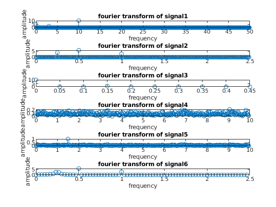

load ("fourier_practicesignals.mat"); iter = 1:6; for i=iter subplot(6,1,i); subplot(length(iter),1,i); plot(eval(['t' num2str(i)]), eval(['y' num2str(i)])); title(strcat('signal ', num2str(i))); xlabel('time(s)'); ylabel('amplitude (v)'); end % signals 1,2,3 and 6 seem to be periodic, so we can probably analyze them % and predict where maximums/minimums occur, while signals 4 and 5 seem to % have too much noise/randomness to see a pattern, at least at first sight Fss=zeros(1,6); ns=zeros(1,6); for i=iter ttemp = eval(['t' num2str(i)]); Fss(i) = 1/ ( ttemp(2)-ttemp(1) ); ns(i) = length(ttemp); end disp(Fss); disp(ns); % t1 = 100hz, n1 = 1000 samples % t2 = 5hz, n2 = 500 samples % t3 = 1hz, n3 = 20 samples % t4 = 20hz, n4 = 601 samples % t5 = 20hz, n5 = 601 samples % t6 = 5hz, n6 = 150 samples for i=iter subplot(6,1,i); subplot(length(iter),1,i); [t, y] = fourier_transform(eval(['t' num2str(i)]), eval(['y' num2str(i)])); stem(t,y); title(strcat('fourier transform of signal ', num2str(i))); xlabel('frequency'); ylabel('amplitude'); end % f % peaks: % signal 1: @ 3hz and @ 10hz % signal 2: @ 0.25hz, 0.5hz and 1hz % signal 3: @ 0.15hz % signal 4: tons of different frequencies, highest peak right below 7hz % signal 5: tons of different frequencies, but clear high peak at 1.5hz % signal 6: big peaks at 0.5hz and 1hz, but also surprisingly many peaks % between 0hz and 0.5hz % conclusion: predictions match outcomes (except maybe 5, granted % surprisingly clear outcome (minus the low amplitude noise) % g % technically if you look at the first element of every amplitude array % none of them are zero, [5, 7.5033e-15, 10, 0.0203, 0.0186, 0.1684], the % 2nd signal has negligable amplitude, 4th, 5th and 6th are tiny. % This is because that number represents the offset from the y-axis and % apparently all of them are located slightly upwards from 0 (especially % the 1st and 3rd signals, which oscillate respectively around 5 and 10, % instead of 0) % h % in the time domain it is really hard to see, and I personally could not % detect the additional sine. In the frequency domain though, it is an % obvious huge peak at 1.5hz, while the noise looks like tons of tine % spikes all over the place (uniform) % i % the smaller amount of samples seems to introduce insecurity/variability, % since signal 6 seems to be picking up a few extra spikes around 0.25hz % that aren't present in signal 2
100 5 1 20 20 5
1000 500 20 601 601 150
